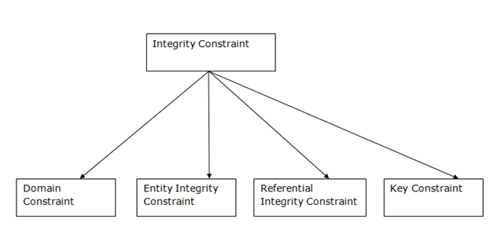

Integrity Constraints
Integrity constraints are a set of rules. It is used to maintain the quality of information.
Integrity constraints ensure that the data insertion, updating, and other processes have to be performed in such a way that data integrity is not affected.
Thus, integrity constraint is used to guard against accidental damage to the database.

1. Domain constraints
- Domain constraints can be defined as the definition of a valid set of values for an attribute.
- The data type of domain includes string, character, integer, time, date, currency, etc. The value of the attribute must be available in the corresponding domain.
2. Entity integrity constraints
- The entity integrity constraint states that primary key value can't be null.
- This is because the primary key value is used to identify individual rows in relation and if the primary key has a null value, then we can't identify those rows.
- A table can contain a null value other than the primary key field.
3. Referential Integrity Constraints
- A referential integrity constraint is specified between two tables.
- In the Referential integrity constraints, if a foreign key in Table 1 refers to the Primary Key of Table 2, then every value of the Foreign Key in Table 1 must be null or be available in Table 2.
4. Key constraints
- Keys are the entity set that is used to identify an entity within its entity set uniquely.
- An entity set can have multiple keys, but out of which one key will be the primary key. A primary key can contain a unique and null value in the relational table.